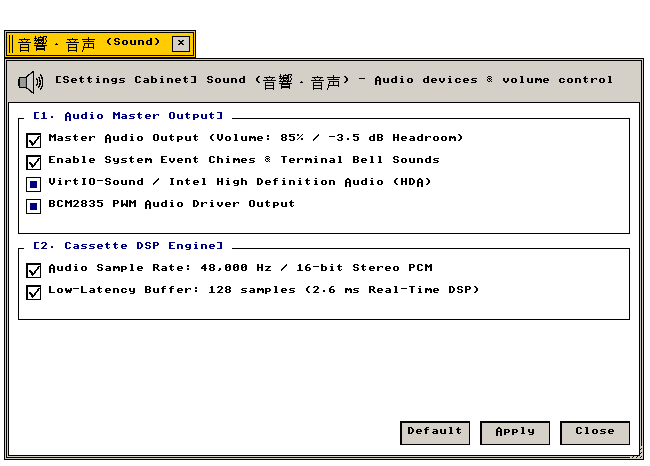

音響設定 (Sound)
VirtIO-Sound · 48kHz/16-bit PCM · 低遅延DSP · BCM2835 PWM
マスター音量、PCMサンプリングレート、DSPバッファ遅延、オーディオデバイス出力の設定仕様
"Real-time audio DSP pipeline parameters, 48kHz PCM sample rates, and low-latency DMA buffer rings."
← 設定フォルダ (Settings Folder Index)
音響設定（Sound） — マスター音量、システムチャイム音、オーディオ出力デバイス（VirtIO-Sound / BCM2835 PWM）、PCMサンプリングレート、DSPバッファ遅延を管理する設定アプレット。
"Audio hardware abstraction subsystem: volume attenuation registers, event sound dispatch, sampling clocks, and ring-buffer latency parameters."
画面プレビュー (Screen Preview)

実機描画フレームバッファより自動抽出された透過音響・音声設定ウィンドウ (Native Headless GDEV Capture)
概要 (Overview)
マスター音量、システムチャイム音、オーディオ出力デバイス（VirtIO-Sound / BCM2835 PWM）、PCMサンプリングレート、DSPバッファ遅延を管理する設定アプレット。
"Audio hardware abstraction subsystem: volume attenuation registers, event sound dispatch, sampling clocks, and ring-buffer latency parameters."
基本操作仕様 (Operational Specifications)：
・[標準 (Default)]：工場出荷時の初期設定に復元します。
・[適用 (Apply)]：設定変更を確定し、システム状態へ反映します。
・[閉じる (Close)]：設定ウィンドウを破棄します（cls_wnd()）。
1. マスターオーディオ出力と出力デバイス (Master Output & Audio Devices)
システム全体の音声出力レベルおよび使用するハードウェアデバイスドライバの設定仕様。
"Master volume attenuation registers and hardware audio sink routing."
| 設定項目・機能名 |
動作概要と視覚仕様 (Functional Specification) |
技術仕様・幾何学構造 (Technical / C99 Definition) |
Master Audio Output (85% / -3.5 dB Headroom)
マスター音声出力 |
システムマスター音量を適正なヘッドルーム（85% / -3.5dB）に設定し、クリッピング歪みを防止します。 |
減衰率: -3.5 dB
C99: g_state_sound.checks[0] |
Enable System Event Chimes & Bell Sounds
システムイベント効果音 |
ウィンドウ警告、ターミナルベル（BEL）、エラー発生時の電子音を有効化します。 |
効果音: PCM サイン波チャイム
C99: g_state_sound.checks[1] |
VirtIO-Sound / Intel HDA Sink Driver
VirtIO-Sound / Intel HDA |
QEMU仮想化環境およびPCハードウェア向けIntel HDA / VirtIO-Soundドライバを出力先に指定します。 |
ドライバ: src/drivers/virtio_sound.c
C99: g_state_sound.checks[2] |
BCM2835 PWM Audio Driver Output
BCM2835 PWM オーディオ |
Raspberry Pi等のARMベアメタル環境向けPWMオーディオコントローラを出力先に指定します。 |
ドライバ: src/drivers/bcm2835_sound.c
C99: g_state_sound.checks[3] |
2. サンプリングレートと低遅延バッファ (Sampling Rates & DSP Latency)
オーディオサンプリングクロックおよびリアルタイムDSPバッファサイズの設定仕様。
"PCM clock frequencies and low-latency DMA ring-buffer sample dimensions."
| 設定項目・機能名 |
動作概要と視覚仕様 (Functional Specification) |
技術仕様・幾何学構造 (Technical / C99 Definition) |
Audio Sample Rate: 48,000 Hz / 16-bit Stereo
48kHz / 16ビット ステレオ PCM |
スタジオ品質の48kHzサンプリング周波数・16ビット量子化ステレオPCM形式で音声を出力します。 |
フォーマット: 48,000 Hz, 16-bit, 2ch
C99: g_state_sound.checks[4] |
Low-Latency Buffer: 128 samples (2.6 ms DSP)
超低遅延バッファ (128サンプル) |
DMAバッファ長を128サンプル（2.6ms遅延）に設定し、リアルタイム音声合成の追従性を高めます。 |
バッファ遅延: 2.66 ms
C99: g_state_sound.checks[5] |
3. 全設定パラメータ仕様一覧 (Configuration Parameter Specifications)
音響設定が提供するすべての設定要素、初期値、およびC99内部シンボル。
"Comprehensive parameter specification table: indexing all UI widget states, factory defaults, and underlying C99 data symbols."
| セクション |
パラメータ名 / UI要素 |
標準値 (Default) |
設定値 / 選択肢 |
C99 内部変数・シンボル |
| [1] 音量・デバイス |
Master Audio Output |
有効 (TRUE) |
チェックボックス |
g_state_sound.checks[0] |
| [1] 音量・デバイス |
System Event Chimes |
有効 (TRUE) |
チェックボックス |
g_state_sound.checks[1] |
| [1] 音量・デバイス |
VirtIO-Sound / Intel HDA |
有効 (TRUE) |
ラジオボタン |
g_state_sound.checks[2] |
| [1] 音量・デバイス |
BCM2835 PWM Output |
有効 (TRUE) |
ラジオボタン |
g_state_sound.checks[3] |
| [2] クロック・バッファ |
48kHz / 16-bit Stereo |
有効 (TRUE) |
チェックボックス |
g_state_sound.checks[4] |
| [2] クロック・バッファ |
Low-Latency 128 samples |
有効 (TRUE) |
チェックボックス |
g_state_sound.checks[5] |
| アクション制御 |
[ 標準 (Default) ] |
— |
初期設定へ復元 |
全フラグTRUEリセット |
| アクション制御 |
[ 適用 (Apply) ] |
— |
変更確定と再描画 |
is_dirty = FALSE, redraw_all_windows() |
| アクション制御 |
[ 閉じる (Close) ] |
— |
ウィンドウ破棄 |
cls_wnd(wnd) |
関連コンポーネント (Related Components)